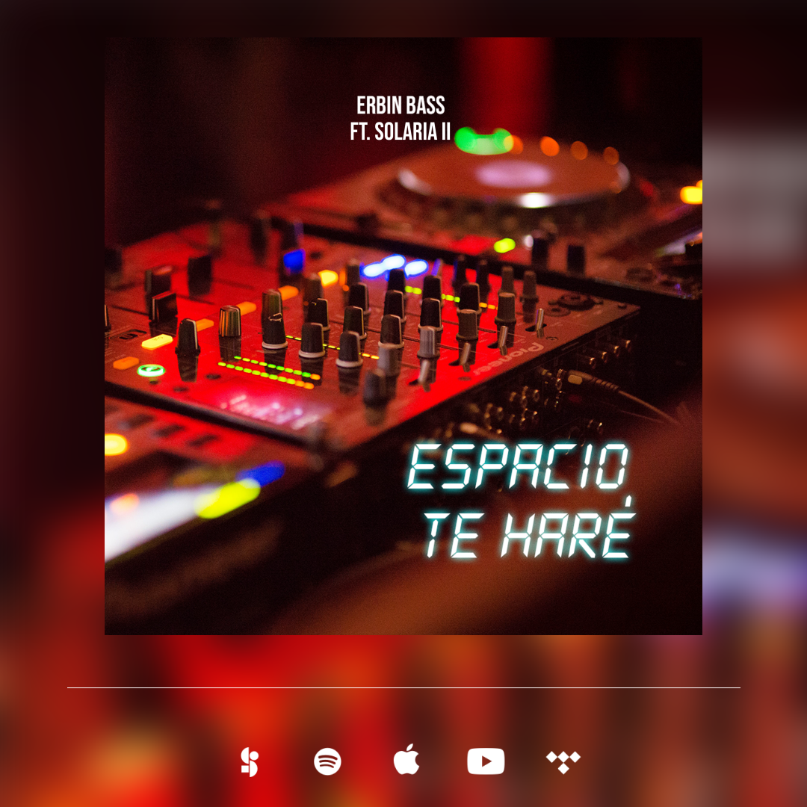
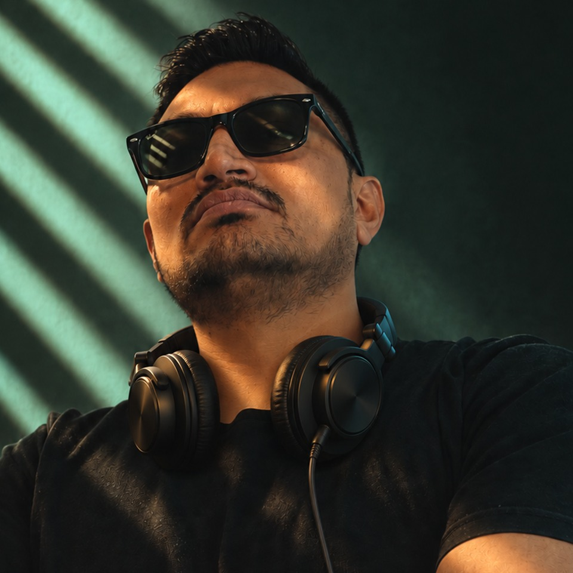

"Espacio Te Haré" es el nuevo sencillo de Erbin Bass junto a la voz de Solaria. Un track electrónico nacido en la cabina, con la energía de la pista y un mensaje de entrega: abrirle espacio a Dios en medio de todo lo que hacemos. Luces, beats y alabanza en un mismo lugar, continuando el camino de Erbin Bass como pionero de la música electrónica cristiana en Ecuador.

Erbin David Basantes, conocido como Erbin Bass, es alabante, artista y productor independiente, pionero de la música electrónica cristiana como DJ cristiano. Es también ingeniero comercial y ha brindado consultoría a artistas y sellos discográficos, además de ser autor y compositor registrado en SAYCE con un repertorio para distintos artistas. Aunque su enfoque principal es la música cristiana, también ha colaborado en proyectos seculares. Es miembro activo de la Iglesia Verbo Mañosca en Quito, Ecuador, y su fe es un pilar fundamental que se refleja en cada nota y letra que crea.